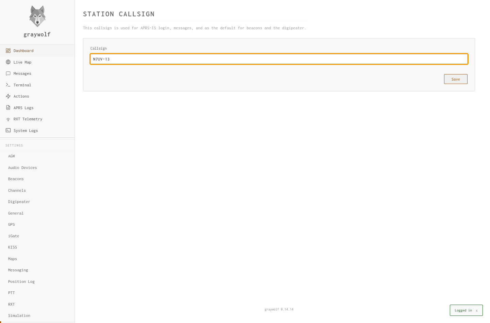
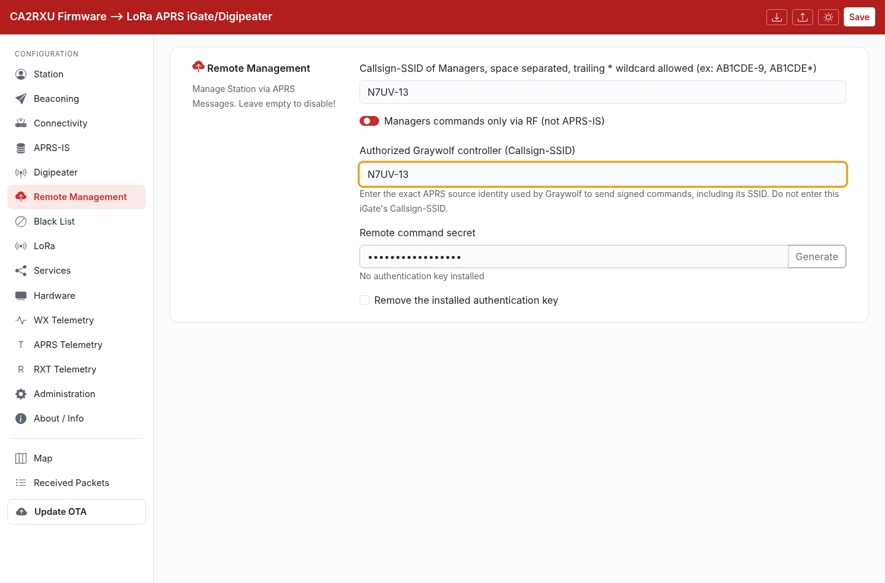
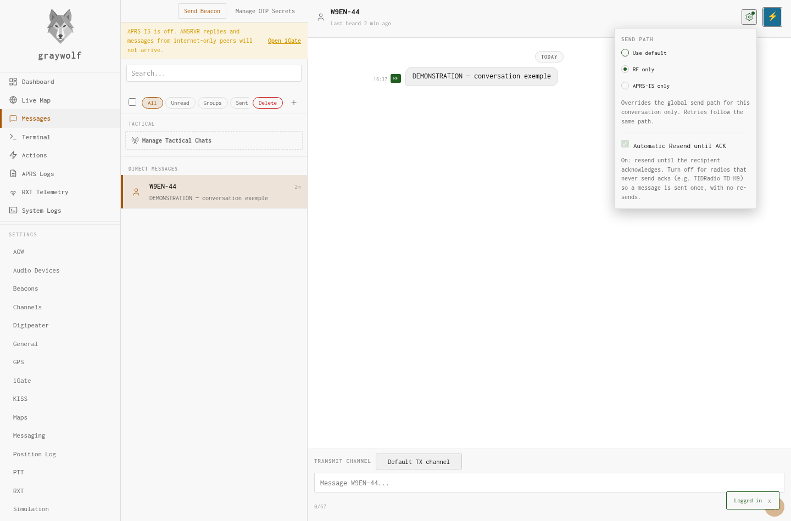
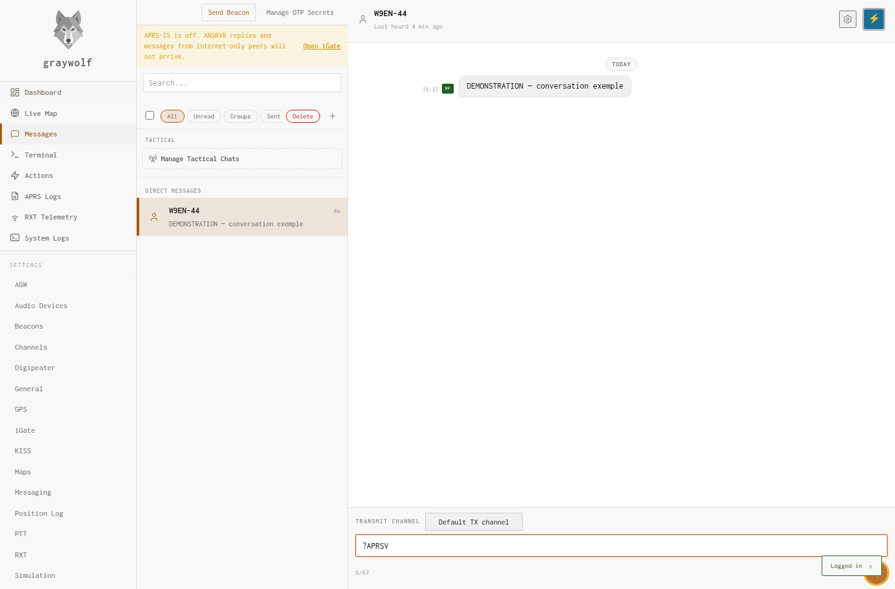
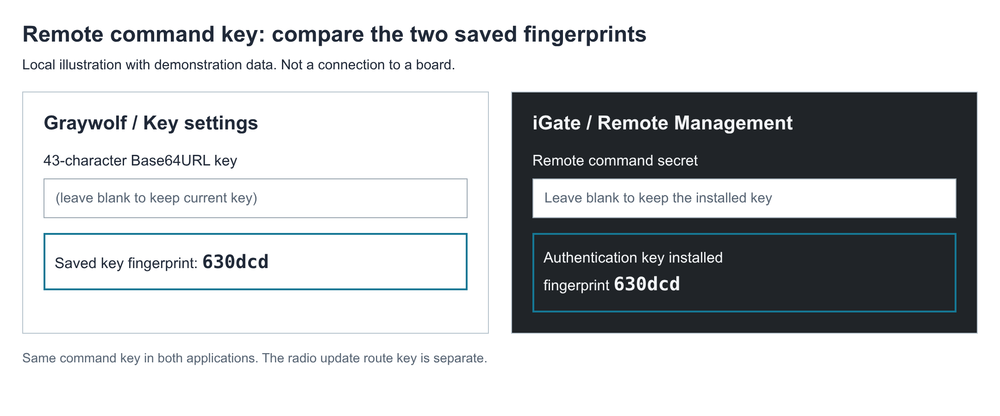
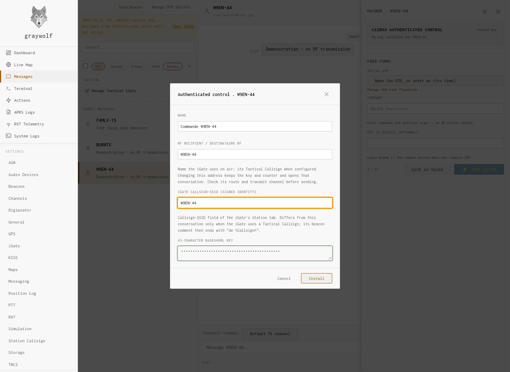
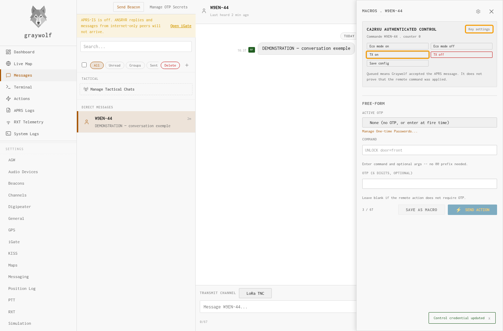

Commander un iGate LoRa depuis Graywolf
Le principe : une même clé dans l’iGate et Graywolf, puis les boutons du panneau ⚡ pour les changements de réglage.
Ce parcours suppose le firmware iGate RXT avec Remote Command Authentication et un Graywolf RXT proposant CA2RXU authenticated control.
Versions compatibles
Pour suivre tout le parcours, y compris la comparaison des empreintes, utilise Graywolf RXT contenant le commit 1380646f (19 novembre 2026) ou un build ultérieur, et le firmware iGate RXT contenant le commit 457670e (19 novembre 2026) ou un build ultérieur. Ce sont les références minimales des fonctions, pas des numéros de versions amont. Les champs distincts de destinataire RF et de cible signée sont apparus dans Graywolf au commit 636d1ab9 (24 octobre 2026), déjà inclus dans cette référence. Le numéro de version de base de Graywolf ne suffit pas à identifier un build RXT : vérifier son identifiant de commit. L’empreinte de l’iGate est affichée dans Remote Management ; si elle manque, passer à un build contenant la référence firmware avant de suivre la comparaison ci-dessous.
1. Identifier le poste qui envoie
Dans Graywolf, ouvre Settings → Station Callsign. Renseigne N7UV-13, puis clique sur Save.
C’est l’identité du poste de commande, avec son SSID. Elle doit être identique au caractère près au champ Authorized Graywolf controller (Callsign-SSID) de la page Remote Management de l’iGate.
| Poste de commande : Graywolf | Station à commander : iGate |
|---|---|
| N7UV-13 | W9EN-44 |
Ces indicatifs servent d’exemple. Ce parcours fonctionne lorsque l’adresse radio et le champ Callsign - SSID de l’iGate sont identiques, ici W9EN-44. Si la carte utilise un tactique différent, adresse la conversation au nom affiché sur l’air et saisis son Callsign-SSID comme identité signée, comme indiqué plus loin.

2. Autoriser Graywolf dans l’iGate
Dans la WebUI de l’iGate W9EN-44, ouvre Remote Management.
- Dans Callsign-SSID of Managers, ajoute N7UV-13 en conservant les autres managers éventuels. Ce champ permet notamment les requêtes d’état.
- Dans Authorized Graywolf controller (Callsign-SSID), entre N7UV-13. Ne mets pas W9EN-44 : ce champ désigne le poste qui commande.
- Pour ce tutoriel par radio, coche Managers commands only via RF (not APRS-IS).
- À la première installation, clique sur Generate à côté de Remote command secret. Copie la clé complète de 43 caractères et conserve-la pour l’étape 5.
- Clique sur Save en haut de la page.
Une clé est déjà installée ? Réutilise la copie correspondante. Le champ vide ne signifie pas qu’elle a disparu : l’iGate ne réaffiche pas la clé enregistrée. Ne génère pas une nouvelle clé sur un seul appareil.

3. Choisir la destination et le trajet radio
Dans Graywolf, ouvre Messages, puis la conversation directe avec W9EN-44.
Si la conversation n’existe pas encore : dans Settings → Messaging, choisis d’abord la politique d’envoi RF only et le canal du TNC LoRa. Puis clique sur New message, entre W9EN-44 dans To et envoie ?APRSV pour ouvrir la conversation.
- Dans l’en-tête de la conversation, clique sur la petite roue dentée : Conversation routing.
- Sélectionne RF only, puis ferme ce menu.
- Sous la conversation, dans Transmit channel, sélectionne le canal relié à ton TNC LoRa. Son nom dépend de ta configuration. La capture montre Default TX channel : c’est un exemple, pas une preuve que ce canal rejoint ta radio LoRa. Sélectionne le canal de ton TNC LoRa réel.
Le TNC relié à Graywolf doit autoriser l’émission. Un flux RXT/JSON de réception seul ne suffit pas pour envoyer une commande. Avec une liaison TNC2, son identité TX doit aussi correspondre à N7UV-13.

4. Vérifier d’abord un échange simple
- Dans la zone de texte de la conversation avec W9EN-44, tape
?APRSV. - Clique sur la flèche d’envoi, en bas à droite.
- Attends la réponse de version de l’iGate, commençant par
CA2RXU_LoRa_iGate v.
Cette requête ne change aucun réglage et ne demande pas de signature. Elle permet de vérifier l’aller-retour des messages avant de tester la clé.
Pas de réponse ? Vérifie d’abord la destination, le canal, l’autorisation TX du TNC, l’activation de l’émission radio sur la cible et le trajet radio. Cela ne permet pas encore de conclure que la clé est incorrecte.

5. Installer la même clé dans Graywolf
- Dans l’en-tête de cette même conversation, clique sur le bouton ⚡.
- Dans le panneau qui s’ouvre à droite, repère CA2RXU authenticated control, puis clique sur Install key.
- Dans Name, entre un nom de ton choix, par exemple Commande W9EN-44.
- Dans RF recipient / Destinataire RF, saisis le nom radio de la cible : son Tactical Callsign si elle en utilise un, sinon son Callsign-SSID de l’onglet Station. Dans cet exemple, entre W9EN-44.
- Dans iGate Callsign-SSID (signed identity), saisis le champ Callsign - SSID de l’onglet Station de l’iGate, ici W9EN-44.
- Dans 43-character Base64URL key, colle la clé copiée depuis l’iGate à l’étape 2, puis clique sur Install.
Comparer la clé enregistrée et vérifier la cible
Après enregistrement, rouvre Key settings dans cette conversation et laisse le champ de clé vide. Compare Saved key fingerprint, juste dessous, à Authentication key installed — fingerprint sous Remote command secret dans la page Remote Management de la carte. Compare Graywolf avec la carte, pas seulement avec un tableur. Des empreintes identiques sont un contrôle utile, pas une preuve que tous les réglages sont corrects.

iGate Callsign-SSID (signed identity) doit correspondre au Callsign - SSID de la carte cible, dans son onglet Station. Ne recopie pas Authorized Graywolf controller : ce champ désigne l’expéditeur, pas la cible. Avec un nom tactique, conserve ce nom comme RF recipient et utilise le Callsign-SSID de la carte pour signer. Laisse le secret vide lorsque tu corriges une identité : la clé et le compteur sont conservés.
La clé de route des mises à jour radio est distincte. Son empreinte ne valide pas une commande TX ou de mode éco.
Il ne s’agit ni du mot de passe de connexion à Graywolf, ni du passcode APRS-IS. Une clé est enregistrée pour chaque iGate cible.
Le bouton Manage OTP Secrets et les macros du même tiroir correspondent à un autre mécanisme. Pour ce tutoriel, utilise uniquement CA2RXU authenticated control.

6. Envoyer une première commande signée
Après installation de la clé, le panneau CA2RXU authenticated control affiche cinq boutons.
- Pour le premier essai, clique sur TX on. Sur un iGate qui émet déjà, cela confirme simplement l’état actif.
- Graywolf prépare et signe la commande automatiquement. Il affiche une notification TX=ON queued, suivie d’un compteur.
- Cherche la réponse de l’iGate dans la conversation :
TX=ONouTX was ON. - Tu peux ensuite envoyer
?TX=?dans la zone de texte normale pour relire l’état.
Queued signifie « mis en file d’envoi », pas « exécuté ». La réponse et la vérification de l’état permettent de contrôler le résultat. Un ACK APRS confirme la réception du message, pas l’exécution authentifiée du réglage.
Ne tape pas ?TX=ON dans la zone de texte pour ce test : ce serait une commande non signée, même avec une clé installée.

Carte avec un nom tactique
Une carte peut avoir N7UV dans le champ Callsign - SSID de l’onglet Station et BURNTX comme Tactical Callsign. Ces deux valeurs ont des rôles différents.
| Réglage | Exemple |
|---|---|
| Contrôleur Graywolf autorisé | N7UV-13 |
| Destination radio et conversation Graywolf | BURNTX |
| Identité de la cible utilisée pour signer | N7UV — le champ Callsign - SSID de la carte |
Le firmware publié vérifie la signature avec N7UV, le Callsign-SSID de son onglet Station. Graywolf adresse le message à BURNTX et le signe pour N7UV.
Règle l’identité signée : ouvre la conversation BURNTX, puis ⚡ → Key settings (ou Install key). Renseigne BURNTX dans RF recipient / Destinataire RF et N7UV dans iGate Callsign-SSID (signed identity). Si tu avais déjà enregistré la clé de commande de cette cible dans Graywolf, dans une conversation adressée à N7UV, ouvre cette conversation et modifie ses Key settings existants : mets BURNTX comme destinataire RF et conserve N7UV comme identité cible signée. Ne crée pas un second enregistrement de clé. Ici, N7UV désigne la carte cible, pas le contrôleur autorisé N7UV-13. La sauvegarde ouvre la conversation de destination RF ; vérifie son trajet et son canal. Pour une clé déjà installée, laisse le secret vide et clique sur Save : la clé et le compteur sont conservés. Aucun changement de firmware n’est nécessaire.
Pour les commandes RF de cette carte, conserve BURNTX comme destinataire. La carte répond aux messages RF adressés à son tactique. Les messages ordinaires et les requêtes non signées, comme ?APRSV, restent adressés à BURNTX.
Pour connaître l’identité à utiliser dans la signature, relève le champ Callsign - SSID de la carte. Par exemple, si le commentaire de sa balise se termine par le texte exact de N7UV, cela indique aussi N7UV comme indicatif de la station. Le champ de l’onglet Station reste la référence.
Changer le nom tactique plus tard, par exemple sur site, n’invalide pas la clé : la signature utilise le Callsign-SSID, pas le nom tactique. Il suffit de mettre à jour le destinataire RF dans Graywolf (⚡ → Key settings, RF recipient) et d’adresser le nouveau nom. Le secret et son compteur sont conservés. En revanche, changer le Callsign-SSID de la carte oblige à changer l’identité signée dans Graywolf.
Après le premier essai
Ce que permettent les boutons
| Bouton | Effet |
|---|---|
| Eco mode on / off | Active ou désactive le mode économie, si le mode de fonctionnement de l’iGate le permet. |
| TX on / off | Active ou désactive les émissions radio. TX off demande confirmation et peut interrompre les réponses RF. |
| Save config | Enregistre la configuration courante pour la retrouver au prochain démarrage. À utiliser après le réglage souhaité, pas pour installer la clé dans Graywolf. |
Les requêtes restent dans la conversation
?APRSV lit la version. ?TX=? lit l’état TX et ?EM=? l’état du mode économie. Ces deux dernières requêtes nécessitent un expéditeur reconnu dans la liste des managers et respectent la restriction RF. Elles ne sont pas signées par les boutons.
Si cela ne fonctionne pas
| Ce que tu vois | Quoi vérifier |
|---|---|
| Pas de panneau CA2RXU | Vérifie que tu utilises le fork Graywolf RXT avec cette fonction, une conversation directe, et le bouton ⚡ de son en-tête. |
| Install key, mais pas les cinq boutons | Aucune clé n’est enregistrée pour l’indicatif exact de cette conversation. |
| AUTH REQUIRED | Un changement de réglage non signé a été reçu. Utilise le bouton correspondant dans le panneau ⚡. |
| AUTH FAILED | Vérifie la clé commune, le contrôleur N7UV-13 et l’identité signée, qui doit correspondre au champ Callsign - SSID de l’iGate. Avec un tactique, vérifie l’identité signée séparée dans Key settings et conserve le nom affiché sur l’air comme destinataire. La console du firmware donne le motif précis du refus. |
Console : Remote command authentication rejected: bad tag | La signature ne correspond pas au calcul de la carte. Compare les empreintes de la clé de commande et l’identité cible signée avec le Callsign-SSID de l’onglet Station de la carte. Ce n’est pas un rejet pour compteur déjà utilisé. Si ces valeurs correspondent, fournis les deux écrans de réglage et la ligne de console ; ne publie jamais le secret. |
| Aucune réponse | L’absence de réponse ne prouve pas que la commande n’a pas été reçue. Reprends le test ?APRSV. Puis vérifie les identités et restrictions : un contrôleur non autorisé peut être ignoré sans réponse d’erreur. |
Ne supprime pas puis ne réinstalle pas la même clé pour « réparer » le compteur. Graywolf repartirait à zéro alors que l’iGate conserve les commandes déjà reçues. Si une nouvelle installation est nécessaire, utilise une nouvelle clé commune sur les deux appareils.
Une fois la configuration terminée, les utilisations suivantes se limitent à : Messages → conversation de l’iGate → ⚡ → bouton de commande.